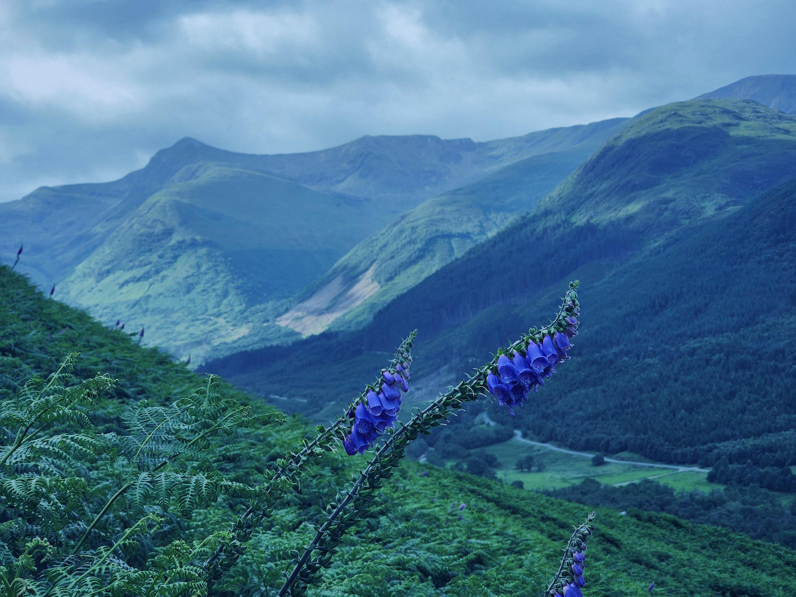
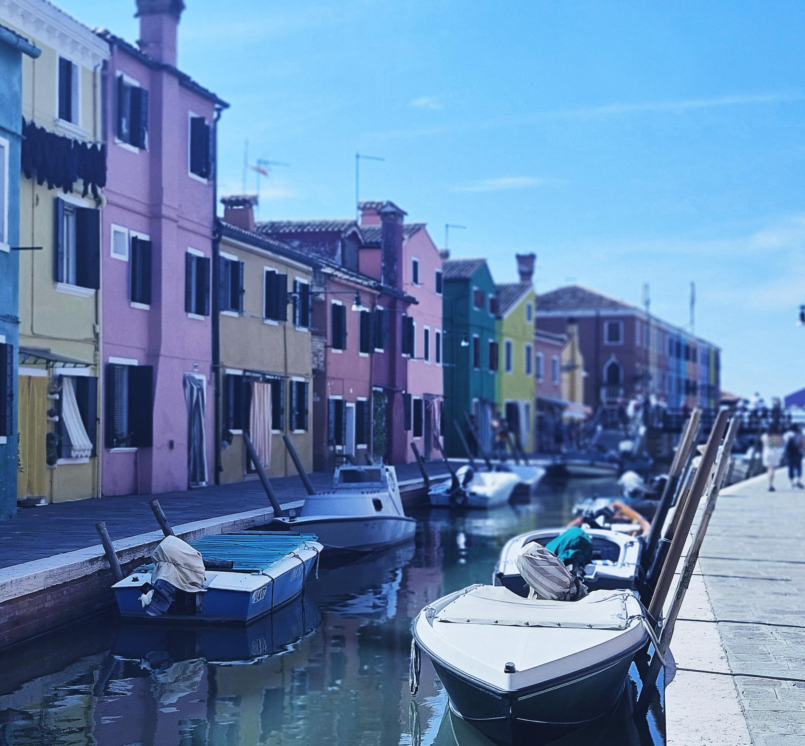
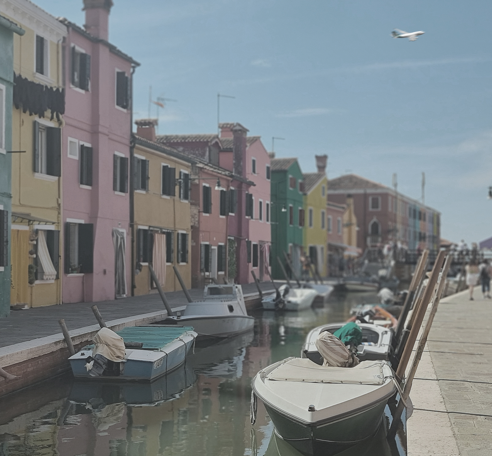
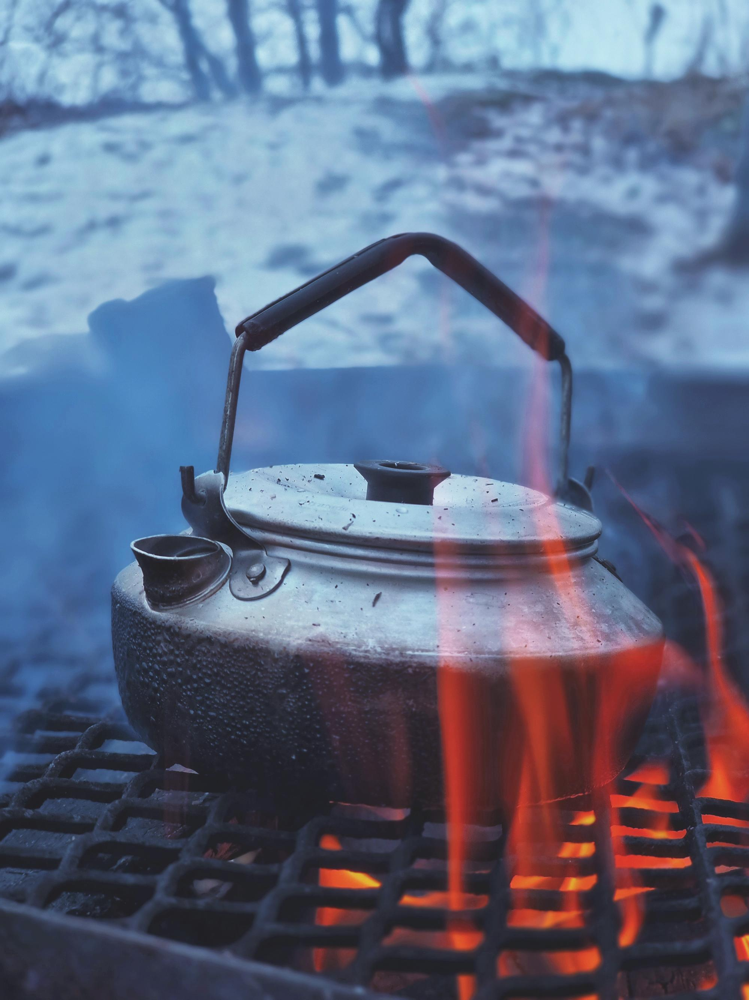

I bilden ovanför har jag först och främst använt en mask med ljusstyrka för att få bilden ljusare, jag har även jobbat en del med kontrasten för att jag tycker att min headerbild är väldigt tydlig och klar. Samtidigt ville jag inte att bilden skulle vara väldigt grön eftersom det skulle inte passa samman med en bild på fjäll där snön ligger kvar. Jag har använt färgbalans för att få bilden lite blåare/kyligare samt färgmättnad för att få blommorna att ändra färg till blå.


Precis som i förra bildparet har jag jobbat en del med kontrasten för att skapa lite skarpare bild. Här har jag också jobbat en del med både färgmättnad och färgbalans för att få till lite renare luft och försökt framhäva det blåa i bilden även om det inte gick jättebra på grund av att det inte fanns så mycket blått, jag har fokuserat på båten till vänster och himlen. Utöver det har jag tagit bort två objekt och det är bland annat flygplanet längst upp och en fot som stack ut vid muren till vänster.


Sista bilden valdes som en kompositionsvariation för att ha ett objekt i naturen med bakgrund med snö. Den här bilden har också redigerats genom att ändra ljusstyrkan och kontrasten samtidigt som färgbalansen ändrades för att få lite mer blå/cyan bakgrund och framhäva snön.